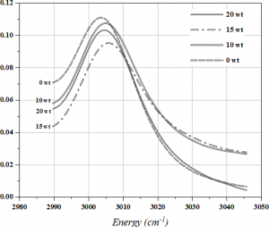
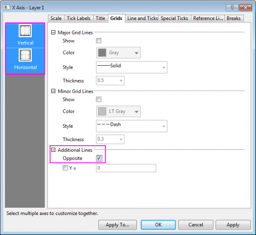
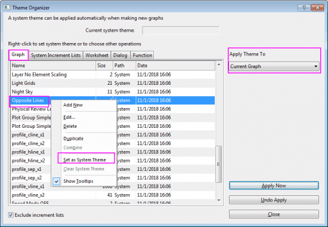

FAQ-946 Wie zeige ich den Rahmen für den 2D-Diagrammlayer?
Show-graph-Frame
Letztes Update: 19.04.2019
Per Standard zeigen die meisten 2D-Diagramme, die über Standardvorlagen erstellt werden, nur die untere X-Achse und linke Y-Achse. Origin verfügt über mehrere Methoden, um obere und rechte Linien für den Layerrahmen zu zeigen.
- 
Gegenüber liegende Linien für das aktuelle Diagramm einschalten
- Klicken Sie doppelt auf die XY-Achse, um den Dialog Achsen zu öffnen. Gehen Sie zur Registerkarte Gitternetzlinien. Halten Sie die Strg-Taste gedrückt und wählen Sie die Symbole Vertikal und Horizontal im linken Bedienfeld aus. Aktivieren Sie das Kontrollkästchen Gegenüber im Zweig Zusätzliche Linien auf der rechten Seite. Klicken Sie auf die Schaltfläche Anwenden.
- 
Gegenüber liegende Linien für Diagramme als Standard aktivieren
- Wählen Sie bei aktiviertem Diagramm Einstellungen: Design verwalten im Menü, um Designs verwalten zu öffnen. Gehen Sie in diesem Dialog zur Registerkarte Diagramm, suchen Sie das Design Opposite Lines heraus und klicken Sie auf die Schaltfläche Jetzt anwenden, um dieses Design auf das aktuelle Diagramm anzuwenden.
Außerdem können Sie die Auswahlliste Design anwenden auf verwenden, um dieses Design auf mehr Diagramme im aktuellen Projekt anzuwenden.
Wenn Sie möchten, dass alle Diagramme, die Sie zukünftig erstellen, alle Achsen zeigen, können Sie mit der rechten Maustaste auf das Designelement klicken, um Als Systemdesign festlegen im Kontextmenü auszuwählen.

Rahmen zeigen
- Wählen Sie bei aktiviertem Diagrammlayer im Menü Ansicht: Zeige: Rahmen.
 | Seit Origin 2019b entspricht der Rahmen dem Linienstil und der Linienfarbe der X- und Y-Achsen. |
Schlüsselwörter:Rahmen, obere X, rechte Y, vier Seiten, Quadrat, Design, Systemdesign